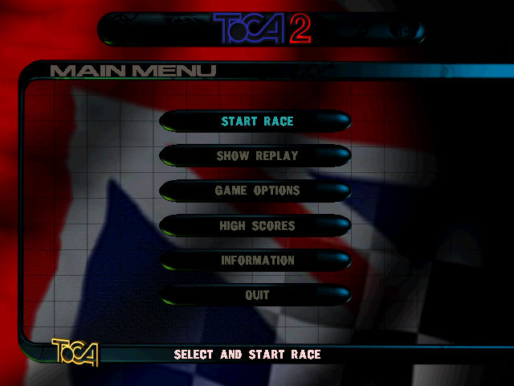
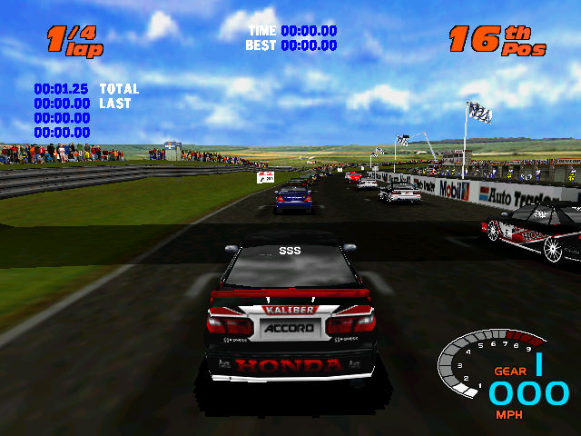

名稱：本田錦標賽2／TOCA 2：房車挑戰賽 (TOCA 2: Touring Cars／Touring Car Challenge，英文版) 簡介：Codemasters 1998年出品的賽車遊戲，1999年移植至Windows [待補]。

保護：光碟，破解碼： TC2.exe 85 DB 7E 3B 55 -- -- EB -- -- F8 05 0F 94 C1 -- -- 41 EB 00 74 0F 85 ED 74 0B 90 90 -- -- 90 90 74 07 B8 01 00 00 00 EB 02 90 90 -- -- -- -- -- -- -- 25 63 3A 5C 00 2E 5C 00 00 -- 備註：VirtualBox需搭配WineD3D，但效能不佳，虛擬機建議使用VMware。 檔案：toca2patch.rar = 1.41更新檔